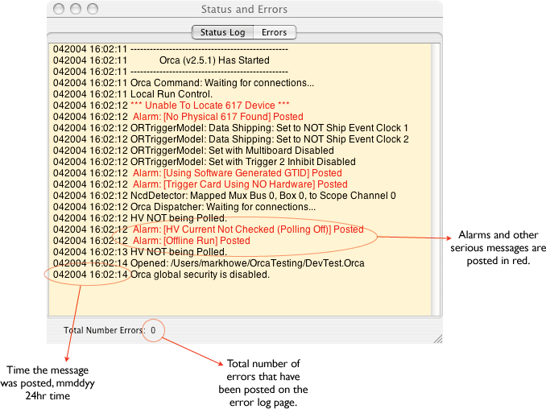
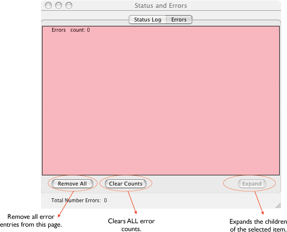
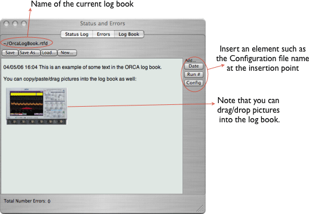
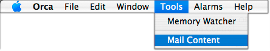

The status log keeps a record of ORCA system activities and can be opened from the main menu (Windows->Status Log). At the end of every run, the status log from the duration of that run is copied to a location specified by the disk object. The copied status log also has a summary of any errors that had been logged during the run. When the status log gets too long (100K or so), the oldest 1/3 is deleted.
As of ORCA version 5.9 the status log content can be emailed.

System-wide errors are counted and logged in a tree hierarchy, with each level of the tree labeled with a title and the total of all the errors in the children of that branch.

You can keep a log book of activities using the ORCA log book. The log book content can be emailed.

If the LogBook or the Status Log is the key window, then you can send their content via email. Just select 'Mail Content' from the main menu:
